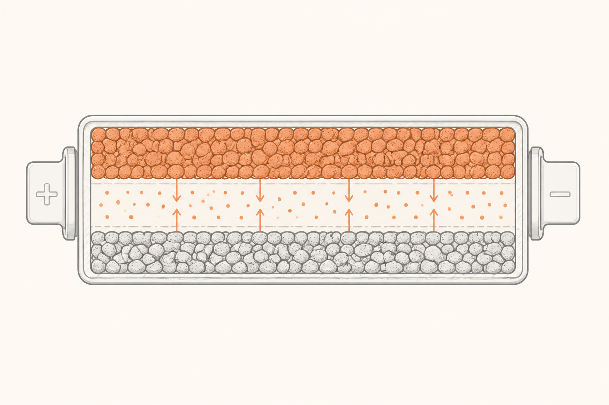

NMC vs LFP: las dos químicas que dominan hoy
Cuando alguien dice "batería de litio", no está siendo del todo preciso. Hay muchas químicas distintas que usan litio, y cada una tiene su propio carácter. Hoy, en coches eléctricos, casi todo es una de dos: NMC o LFP. Saber distinguirlas y entender qué prioriza cada una es el atajo para leer cualquier ficha técnica con criterio.
Qué pasa dentro de una celda
Antes de comparar químicas, el truco básico de una batería de litio. Imagina dos esponjas separadas por una rejilla. Una esponja tiene un sitio cómodo para que vivan los iones de litio (es el cátodo); la otra esponja también, pero menos cómodo (el ánodo). Entre ambas hay un líquido (el electrolito) por el que los iones pueden viajar de una esponja a la otra. Y hay una membrana fina (el separador) que deja pasar a los iones pero no deja que las esponjas se toquen.
Cuando cargas la batería, fuerzas a los iones a viajar del cátodo (cómodo) al ánodo (incómodo). Eso requiere energía: la que tú metes desde el enchufe. Cuando descargas la batería (o sea, conduces), los iones aprovechan la oportunidad y vuelven a su sitio cómodo, soltando esa energía por el camino. Esa energía es la que llega al motor.
La diferencia entre NMC y LFP está en de qué está hecho el cátodo. Y eso, que parece un detalle químico menor, cambia todo: cuánta energía cabe, cuánto cuesta, cuánto dura, qué temperatura aguanta, qué pasa si tiene un accidente.

NMC: densidad antes que durabilidad
NMC son las iniciales de los tres metales del cátodo: Níquel, Manganeso y Cobalto. Es la química histórica del coche eléctrico premium. Su gran virtud es la densidad energética: cabe mucha energía en poco peso. Si quieres 600 km de autonomía sin que el coche pese tres toneladas, NMC es tu opción.
Sus inconvenientes son tres y van de la mano. Es cara (el níquel y sobre todo el cobalto son metales caros y polémicos por sus condiciones de extracción). Es más sensible al calor (degrada más rápido si la temperatura del pack se descontrola, y en escenarios extremos puede entrar en fuga térmica con más facilidad). Aguanta menos ciclos de carga (típicamente entre 1 000 y 2 500 ciclos hasta perder un 20% de capacidad).
El argumento "vendedor" de NMC es siempre el mismo: más kilómetros por kilo.
LFP: durabilidad antes que densidad
LFP son las iniciales de Litio, Fierro (hierro en inglés) y Fosfato. Sustituye los metales caros y delicados por hierro y fósforo, baratos y abundantes. La consecuencia es casi una réplica espejo de NMC.
Su gran virtud son tres ventajas a la vez. Es barata (no usa cobalto ni níquel). Es estable térmicamente (mucho más resistente a la fuga térmica; en muchos ensayos perforando una celda LFP no pasa nada espectacular, mientras una NMC arde). Aguanta muchos más ciclos (3 000 a 6 000 fácil, algunos diseños pasan los 10 000).
Su inconveniente principal es la otra cara de la moneda: menos densidad energética. Para los mismos kWh, una batería LFP pesa y ocupa entre un 20% y un 30% más que una NMC. Y en frío extremo pierde más autonomía temporal.
El argumento vendedor de LFP es: la batería más segura, más duradera y más barata, a costa de algo de peso y autonomía.
NMC
- Más densidad energética (autonomía con menos peso).
- Más cara, usa metales escasos.
- Más sensible al calor.
- ~1 000–2 500 ciclos hasta el 80%.
- Encaja en gama alta y largas autonomías.
LFP
- Más durable (3 000–10 000 ciclos).
- Más barata, sin cobalto ni níquel.
- Más estable térmicamente.
- Menos densidad (más peso por kWh).
- Encaja en gama de acceso, urbano y flotas.
Cuándo se elige cada una
La elección no es estética: cada química responde a un encargo concreto.
NMC se elige cuando manda la autonomía y el peso. Coche premium de 500-700 km de autonomía. Coches deportivos donde un kilo extra en la batería cuesta una décima en la pista. SUV grandes donde reducir peso es difícil pero importa.
LFP se elige cuando manda el coste, la durabilidad o la seguridad. Coches urbanos pequeños donde 300 km de autonomía sobran. Flotas de taxi y reparto que cargan y descargan miles de veces y necesitan que la batería aguante años. Almacenamiento estacionario en casas o plantas (donde el peso da igual y la seguridad es lo primero).
Hay otra regla de oro práctica: en LFP, los fabricantes a menudo recomiendan cargarla al 100% de forma rutinaria, porque la química lo aguanta sin penalización. En NMC, lo habitual es quedarse en 80-90% para alargar vida, y solo subir al 100% cuando vas a hacer un viaje largo. Si te dicen "carga a tope siempre" probablemente tu coche es LFP. Si te dicen "carga al 80% en el día a día", es NMC.
Lo que viene después
NMC y LFP cubren hoy el ~95% del mercado, pero no van a ser eternas. Hay tres apuestas que las complementan o las sustituyen:
Sodio-ion aprieta a LFP por abajo: aún más barata, basada en sal en lugar de litio, ideal para urbanos cortos y almacenamiento. Estado sólido aprieta a NMC por arriba: cambia el electrolito líquido por uno sólido, prometiendo más densidad y más seguridad. Baterías estructurales no cambian la química, sino que integran el pack en el chasis para ahorrar peso. Las tres llegan en la píldora 11.
Pero atención: por mucho ruido mediático que tengan, en la próxima década NMC y LFP seguirán siendo la columna vertebral. Saber diferenciarlas no es opcional.
Fácil¿Qué metales lleva el cátodo de una NMC?
Níquel, manganeso y cobalto. La proporción concreta varía según el fabricante (NMC 622, NMC 811…), pero los tres están siempre presentes.
Fácil¿Cuál de las dos químicas suele recomendarse cargar al 100% rutinariamente?
LFP. Su química aguanta cargas completas frecuentes sin penalización notable de vida útil. NMC se cuida limitando la carga diaria al 80-90%, salvo viajes largos.
MedioUn fabricante te ofrece dos versiones del mismo coche: una con 60 kWh LFP y una con 60 kWh NMC, ambas con la misma autonomía declarada. ¿Cómo es posible?
Porque la autonomía depende de los kWh disponibles, no de la química directamente. Si ambas declaran 60 kWh, ambas tienen la misma cantidad de energía. La diferencia será otra: la versión LFP probablemente pesará más (porque LFP tiene menos densidad por kg), aguantará más ciclos y será más barata. La NMC pesará menos, podrá ofrecer una variante de mayor autonomía y costará más. Misma autonomía, distinto perfil de propietario.
DifícilUna flota de reparto urbana hace 200 km al día, 6 días a la semana, durante 8 años. ¿Qué química eliges y por qué?
LFP, casi seguro. Hagamos cuentas: 200 km/día × 6 días × 52 semanas × 8 años ≈ 500 000 km. Si la batería se descarga del 80% al 20% cada día, son ~2 500 ciclos completos en esa vida útil. Una NMC podría llegar justa al final con degradación notable; una LFP llega holgada (3 000-6 000 ciclos típicos) y además es más barata, más segura y aguanta cargas rápidas frecuentes mejor en el día a día. Para flotas la cuenta sale casi siempre LFP.